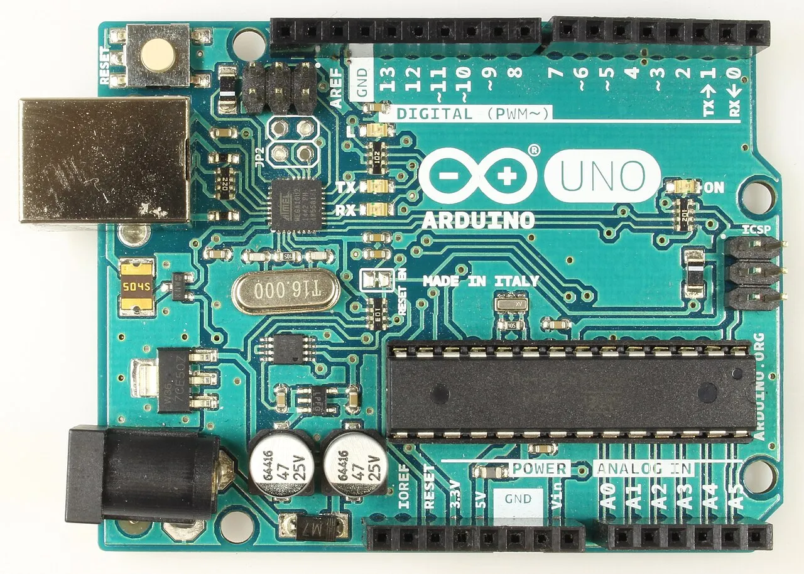
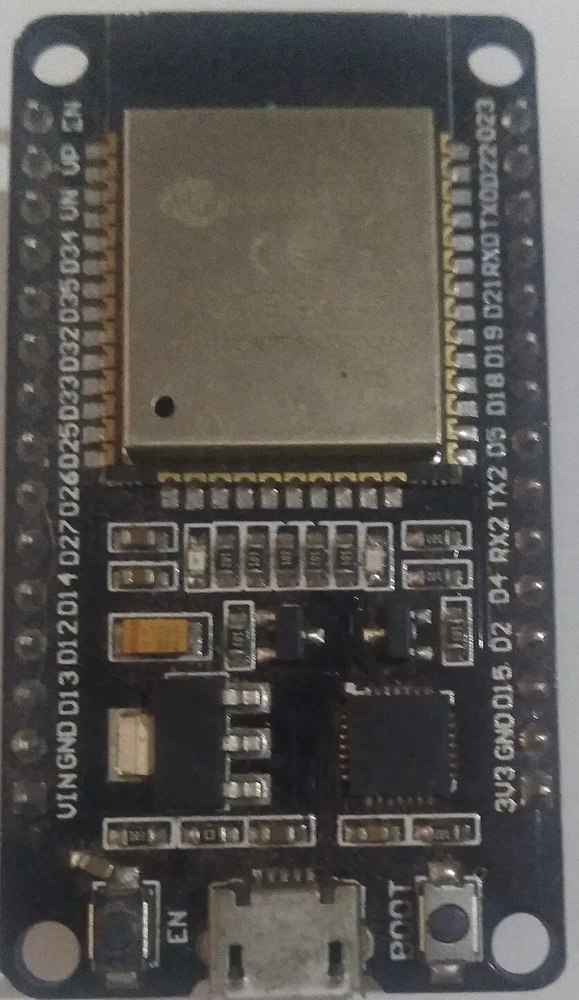
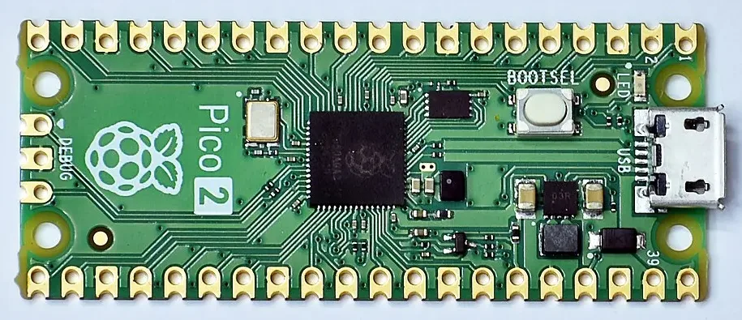

基礎講義
Arduino IDE・驅動程式・Python（uv）・VS Code・Git・AI 工具與資安



規格怎麼看・市面上的熱門控制器・什麼任務用什麼板子
微專案 01
零件：HC-SR04 超音波・光敏電阻模組・旋鈕・有源蜂鳴器・全彩 LED
Uno 負責偵測與警報，USB 接電腦，由 Python 寄 Gmail。
ESP32 可以自己用 Wi-Fi 寄 Gmail，也可以像 Uno 一樣接電腦由 Python 寄。